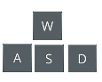
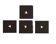
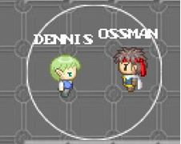
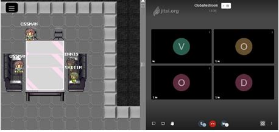
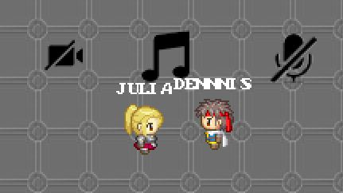

Informationen über die Bedienung des WorkAdventure und Tutorials finden Sie hier. Wir wünschen Ihnen viel Spaß bei Erforschen der Hochschule in der Online-Welt.
Viele Grüße
Klaus Knopper
Equipment
Um Workadventure problemlos auf dem Rechner spielen zu können, wird Folgendes benötigt:
Minimal Hardwareanforderungen:
- Betriebssystem
- Grafikkarte
- CPU
- Arbeitsspeicher
Unterstützte Browser:
- Firefox
- Chrome
- Opera
- Safari
Notiz:
Spiel ist nur über einen Rechner spielbar, da die Tastatur notwendig ist.
Steuerung
  Auf den Tasten kann dein Charakter in jede Richtung bewegt werden.
Mit der Leertaste können Aktionen ausgeführt werden, wie zum Beispiel das Öffnen eines Streames.
Shifttaste zum Rennen.
 Mit der ESC-Taste wird das Menü geöffnet.
Mit der ESC-Taste wird das Menü geöffnet.
Features:
In diesem Abschnitt werden die existierenden Features, die in diesem Spiel implementiert und genutzt werden können, präsentiert.
Gespräch mit maximal 3 Personen
Gespräche bis zu 3 Personen können stattfinden, indem die Charaktere nahe beieinanderstehen. Dabei muss das Mikrofon im Browser zugelassen sein, um das Gespräch führen zu können.
Gruppengespräche
Gespräche mit mehreren Personen sind in Räumen bei größeren oder gruppierten Tischen möglich. Dabei muss die Aktionstaste gedrückt werden, um einer Gruppensitzung beizutreten. Es gibt nur eine Gruppensitzung pro gruppiertem Tisch.
Ruhezone
Falls man in Ruhe gelassen werden möchte, kann man Ruhezonen betreten, die entsprechend markiert sind. In solchen Zonen kann weder gechattet, noch kann die Kamera oder das Mikrofon zur Kommunikation benutzt werden. Stattdessen kann unter anderem die Musik genossen werden 😉
Stream Anschauen
In den Vorlesungsräumen können Streams über die Vorlesungen angeschaut werden.

Infopoints
Es gibt Aktionspunkte, bei dem Informationen über die Instanzen der Hochschule aufgerufen werden können. Zusätzlich können Aktionspunkte gefunden werden, bei denen es Interessantes zu Projekten und Einrichtungen zu sehen gibt. Deswegen ist es auf jeden Fall lohnenswert, solche Punkte zu finden 😉
Kartenwechsel
In diesem Spiel wurden die Standorte Zweibrücken, Kaiserslautern und Pirmasens verbildlicht. Der Teleport dazu ist (irgendwie makiert) und führt sofort zum jeweiligen Campus
Richtlinien:
Die Hochschule Kaiserslautern haftet nicht für Ihre Handlungen im MMORPG Spiel. Das heiß, Sie sind selbst dafür verantwortlich, welche Links Sie im Chat anklicken oder Ihre persönliche sowie private Daten preisgeben. Wenn Sie Fragen oder Probleme im Spiel haben, dann können Sie gerne unsere FAQ im folgendem Link besuchen.
FAQ:
Sollten Sie keine Lösung in der FAQ gefunden haben, können Sie gerne eine E-Mail an den Support schreiben.
Support: